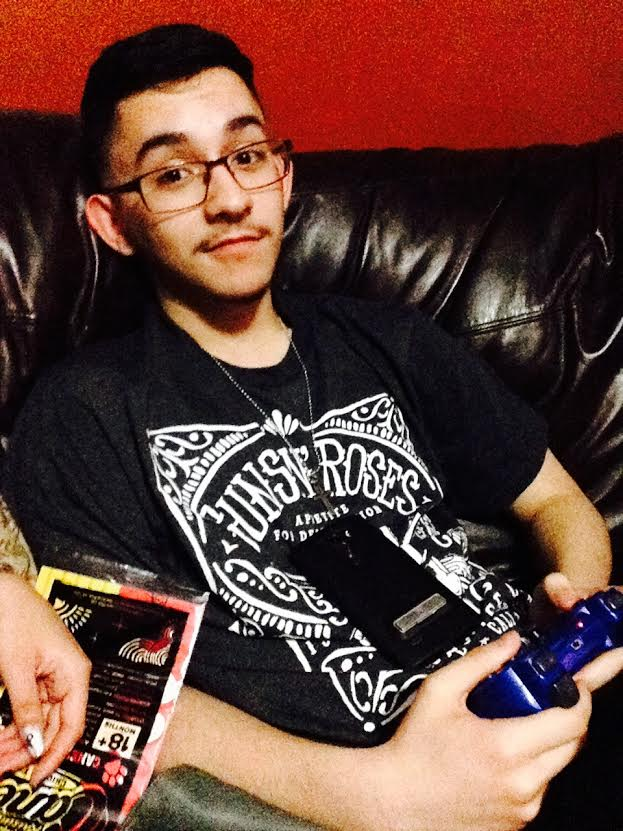
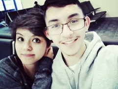
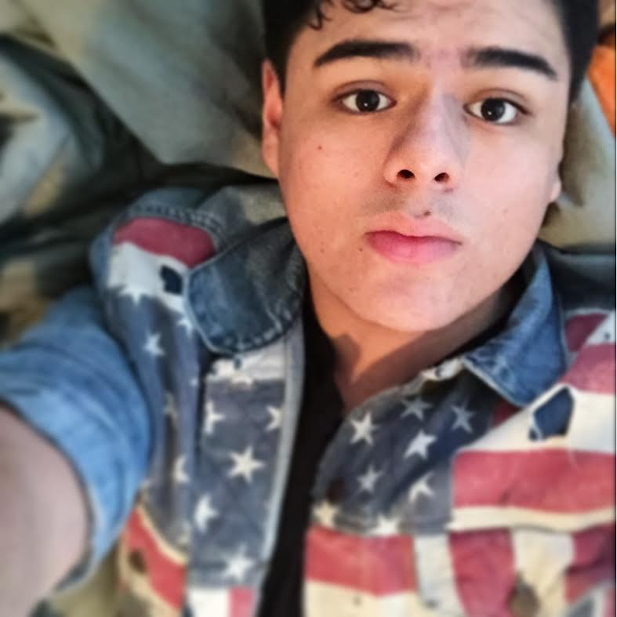
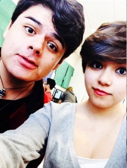
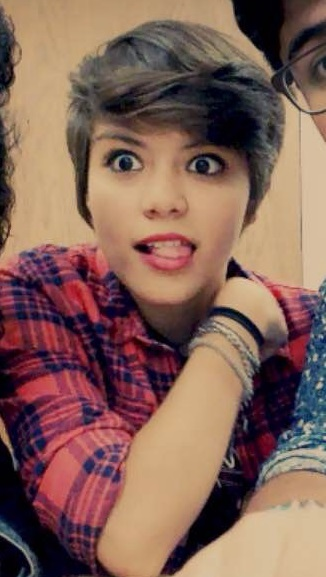

This is a list of my favorite people that I know personally. This list is especially great because I know how they are and how awesome they are.
Noah is a m a z i n g. We have been together for over 5 years and I have gotten to know him so well. He is very passionate about what he believes in. Whenever we talk about things he is interested in, he knows what he is talking about. He is funny and makes me happy. Noah also isn't lame. He can be much sometimes but that is just who he is. He is very special to me. Noah is amazing and prodigious.
 Armondo is so special to me. He is the best brother I could ever have. He is there for me whenever I need him. If I'm looking for advice, he's the person I go to. I love that he can be himself and isn't afraid. Armondo isn't afraid to tell me if I'm being dumb or childish. I know he has my back. Armondo is amazing and prodigious.
I am awesome, prodigious, and amazing. :3
